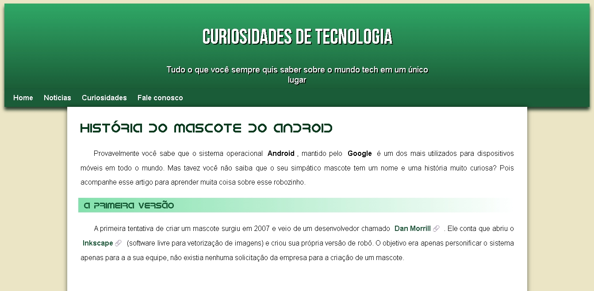

Android
Sobre o Projeto
Este projeto foi criado utilizando HTML e CSS.
O site é uma página informativa sobre tecnologia criada pelo professor Gustavo guanabara no curso em video. Ele apresenta uma estrutura de navegação simples e intuitiva, com um menu no topo que inclui seções como Home, Notícias, Curiosidades e Fale conosco.
Imagem do Projeto

Tecnologias Utilizadas
- HTML5
- CSS3
- Git e GitHub
Conceitos praticados
- HTML semântico
- Seletores de CSS
- display block;
- box model
- Variáveis CSS
- Responsividade com media queries